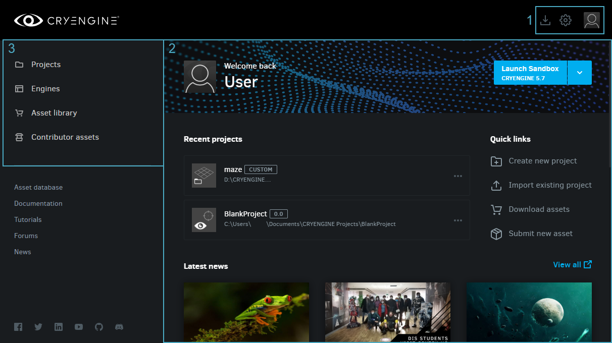
The CRYENGINE Launcher interface
1. Quick Access
| Button | Description | ||||||||||||||||||||||||||||||||||||
|---|---|---|---|---|---|---|---|---|---|---|---|---|---|---|---|---|---|---|---|---|---|---|---|---|---|---|---|---|---|---|---|---|---|---|---|---|---|
Clicking this provides the following sub-options:
| |||||||||||||||||||||||||||||||||||||
Clicking this shows the following sub-options:
| |||||||||||||||||||||||||||||||||||||
Opens a tab that displays all active downloads and uploads, if any. The icon will change to when a download or upload is in progress. |
2. Launcher Home
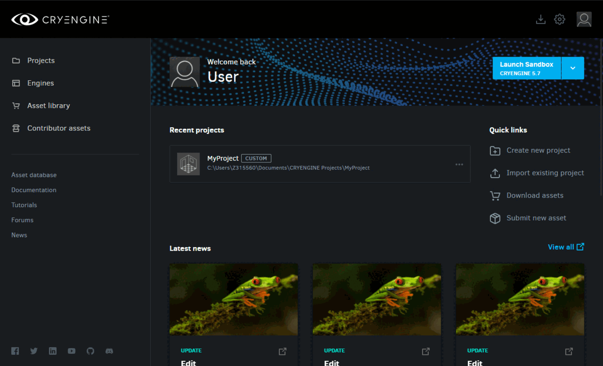
Launcher Home
Launch Sandbox
The Launch Sandbox button
Clicking this button opens the CRYENGINE version you've set as your default in the Engines library.
The dropdown beside this button provides the following options:
| Option | Description |
|---|---|
| CRYENGINE <version number> | Lists every installed CRYENGINE version; click one to launch the Sandbox Editor in the respective version. |
| Manage Engines | Redirects you to the Engines library in the CRYENGINE Launcher. |
Recent Projects
Lists all recently opened projects from your Projects library.
Quick Links
| Option | Description |
|---|---|
| Create New Project | Lets you create a new project. When clicked, the Select Engine Version prompt appears, allowing you to select the Engine version your project should use. 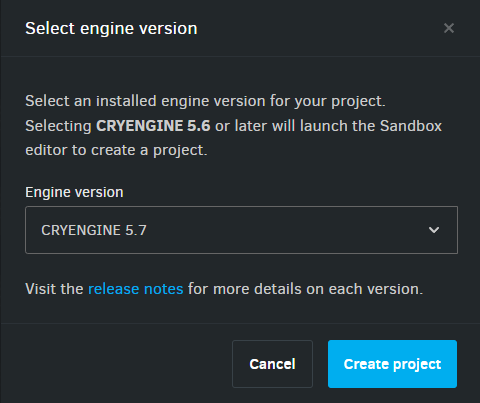 See Creating, Importing & Upgrading Projects for more information. |
| Import Existing Project | Opens the file explorer, allowing you to locate and import an existing CRYENGINE project. The imported project will be listed in the Projects library. |
| Download Assets | Redirects you to the Asset Library tab. |
| Submit New Asset | Redirects you to the asset creation page in the Contributor Assets tab. See Contributing to the Asset Database for more information. |
Latest News
Lists the most recent news items from the CRYENGINE Blog.
Asset Database
Lists the latest and most popular assets from the CRYENGINE Asset Database.
3. Tabs
Projects
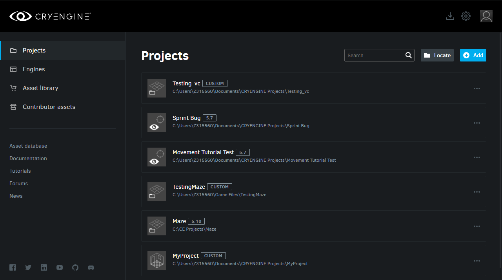
Projects tab
Opens the Projects library, where you can see all the CRYENGINE projects that are stored in the projects directory specified in the Launcher Settings.
Buttons
The buttons in the top right corner are as follows:
| Button | Description |
|---|---|
| Allows you to search, by name, for a project listed in the Launcher. | |
| Opens the file explorer, allowing you to locate and import an existing CRYENGINE project. The imported project will be listed in the Projects library. | |
Lets you create a new project. When clicked, the Select Engine Version prompt appears, allowing you to select the Engine version that your project will use. Select Engine Version See Creating, Importing & Upgrading Projects for more information. |
Project Options
Clicking the 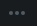
| Options | Description |
|---|---|
| Launch in Sandbox Editor | Opens the project in the Sandbox Editor. |
| Launch Game Executable | Opens the project in the Game Executable Launcher. |
Open in Visual Studio | Opens the code solution of the selected project in MS Visual Studio. This is only available for projects that have a code solution, which can be generated using the Generate Solution option in the .cryproject context menu. |
| Edit Project Details | Takes you to the Edit Project dashboard, where you can assign a custom thumbnail to your project as well as change its name, Engine version, and even create a backup. 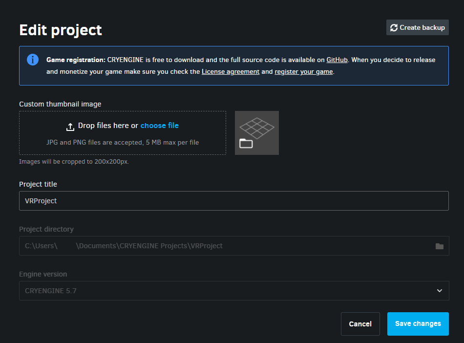 Edit Project
|
Backup Project | Allows the user to choose the directory where their project backup will be stored. Backup Project |
| Reveal in Explorer | Opens the selected project's directory in the file explorer. |
| Remove | Removes the selected project from the Launcher's Projects library. This does not remove the project from your hard drive; it will still be available in its storage directory. |
| Delete from Hard Drive | Completely deletes the selected project, both from the Launcher and the user's hard drive. |
Engines
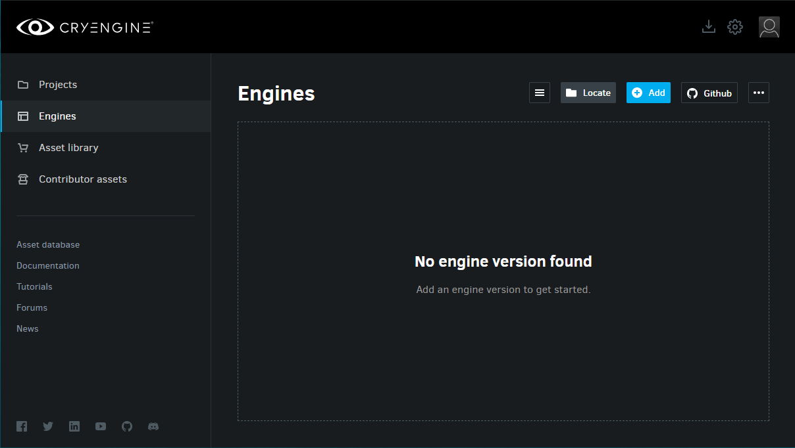
Engines tab
Opens the Engines library, where all downloaded and installed versions of CRYENGINE are listed.
Buttons
The buttons included in the top-right corner are:
| Button | Description | ||||||
|---|---|---|---|---|---|---|---|
or | Toggles the display of installed Engine versions to list or thumbnail view. | ||||||
Opens the file explorer that allows you to locate and import a CRYENGINE version that was previously downloaded. | |||||||
When clicked, the Select Engine Version prompt appears, allowing you to select an Engine version to download. 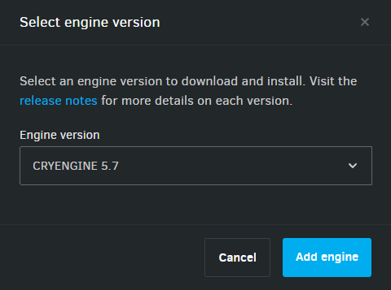 Select Engine Version As of the 5.7.1 Launcher update, only CRYENGINE versions 5.7 and onwards may be downloaded. | |||||||
| Opens CRYENGINE's GitHub repository from where you can download its source code. | |||||||
|
Engine Options
Clicking the icon in an Engine listing provides the following options:
| Option | Description | ||||||||
|---|---|---|---|---|---|---|---|---|---|
| Update | This option is only available when an Engine update is pending. Initializes the available Engine update. | ||||||||
| Launch | This option is only available for Engine versions 5.6 or later. Launches the selected Engine version. Clicking this option will open the Sandbox Editor's Project Browser, allowing you to create a new project or open an existing one. | ||||||||
| Create New Project | Creates a new project using the selected Engine version. Selecting this option for Engine versions 5.6 or later will redirect you to the Sandbox Editor to create a new project. For earlier versions, it will bring up the following dashboard: Creating a new project in earlier versions of the Engine See Creating, Importing & Upgrading Projects for more information. | ||||||||
| Verify Integrity | Allows the user to check if the selected Engine version's storage directory has been modified (by moving or deleting its files, etc.). After the integrity check, a modified Engine download is indicated by the icon in place of . | ||||||||
| Redownload | Redownloads the selected Engine version, if it was previously modified. This option is only visible for Engine downloads that have had their storage directories modified; a modified Engine download is indicated by the icon (see Verify Integrity above). | ||||||||
Set/Remove as Default Engine | Allows the user to select/deselect an installed Engine as the Engine version that should open when clicking the Launch Sandbox button in the Launcher Home. Launch Sandbox | ||||||||
| Reveal in Explorer | Opens the selected Engine's directory in the file explorer. | ||||||||
Manage Dependencies | Allows the user to manage and install the various components required to work with code, third party middleware, plugins etc. Add dependencies
You can find descriptions of each of the above packages/tools in the Launcher. | ||||||||
| View Release Notes | Redirects you to the release notes for the selected Engine version in the online documentation. | ||||||||
| Delete from Hard Drive | Completely deletes the selected Engine version's storage directory. |
Asset Library
Lists all assets that have been downloaded from the CRYENGINE Asset Database.
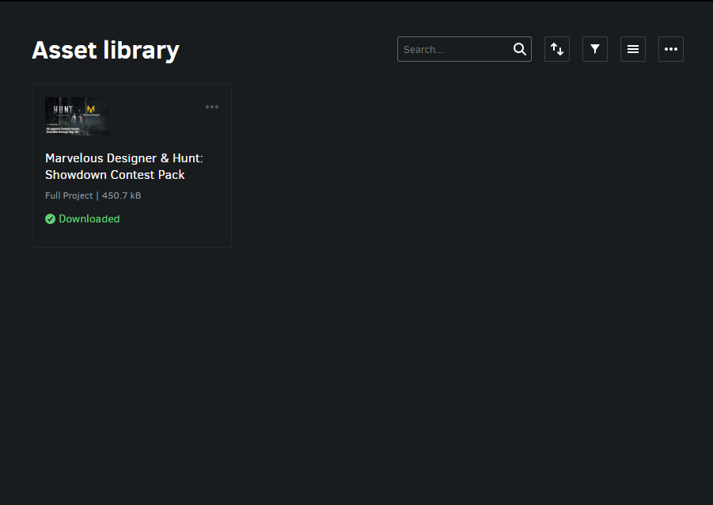
The Asset Library
If you have recently upgraded to a new Launcher version and have yet to migrate your assets, there will be a reminder in your Asset Library to do so, as shown here:
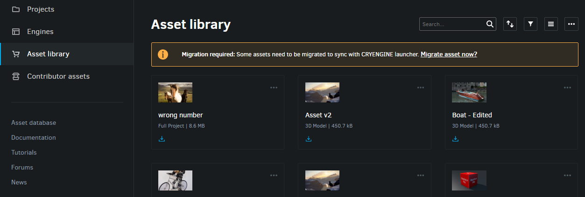
Migration reminder
Clicking Migrate Asset Now will bring up the Migrate Assets prompt.
If you haven't downloaded any assets from the CRYENGINE Asset Database yet, you will see the Visit Asset Database hyperlink in the Asset Library as shown:

Empty Asset Library
Clicking this hyperlink opens the CRYENGINE Asset Database in the web browser, where you can acquire free assets uploaded by other developers. Once an asset has been ordered, it will be available for download within the Launcher.
See Downloading and Installing Assets for more information.
Buttons
The buttons in the top-right corner are:
| Button | Description | ||||||||||
|---|---|---|---|---|---|---|---|---|---|---|---|
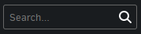 | Allows you to search, by name, for an asset listed in the Launcher. | ||||||||||
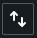 | Sorts assets according to one of the following criteria:
| ||||||||||
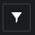 | Filters displayed according to the following criteria:
| ||||||||||
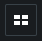 | Toggles the display of installed assets to list or thumbnail view. | ||||||||||
|
Asset Options
Clicking the
| Option | Description |
|---|---|
| Download | This option is only visible for assets that have been ordered in the Asset Database but not yet downloaded to disk; see Downloading and Installing Assets for more information. Downloads the listed asset. |
| Verify Integrity | Checks if the selected asset's storage directory has been modified (files deleted, moved, etc.). After the integrity check, a "modified" asset download is indicated by the 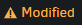 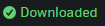 |
| Redownload | This option is only visible for asset downloads that have had their storage directories modified; a modified asset download is indicated by the Redownloads the selected asset, if it was previously modified |
| Reveal in Explorer | Opens the selected asset's directory in the file explorer. |
| View on Asset Database | Opens the selected asset's CRYENGINE Asset Database page in the web browser. |
| Delete from Hard Drive | Completely deletes the selected asset the user's disk. |
Contributor Assets
Opens the Contributor Assets library, where you can submit free assets that you'd like published on the Asset Database, as well as check the status of their review process.
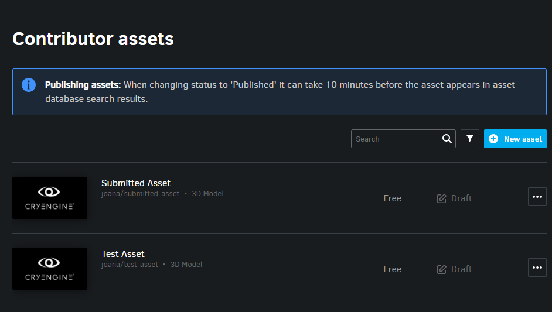
Contributor Assets library
Become a Contributor
If you haven't created a Contributor account yet, you will see the following message when opening the Contributor Assets tab:
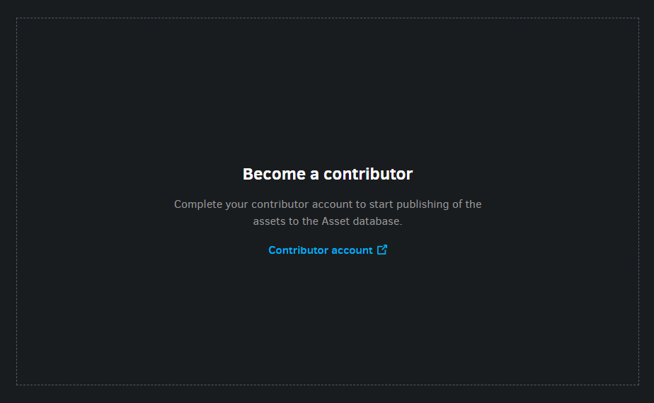
Become a contributor
Once your Contributor account has been successfully created, the Contributor Assets library should look like this:
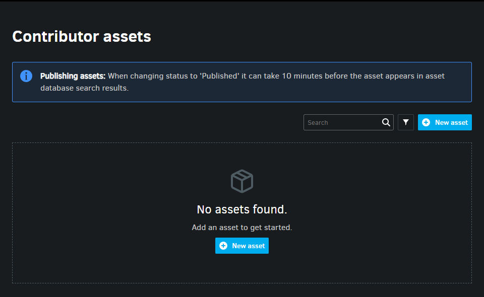
No assets found in the Contributor Assets library
Buttons
After your Contributor account has been successfully created, you should see the following buttons/options in the Contributor Assets library:
| Button/Option | Description |
|---|---|
| Allows you to search, by name, for the assets you've submitted to the Asset Database. | |
Allows you to filter assets listed in the Contributor Assets library by one or a combination of the following criteria:
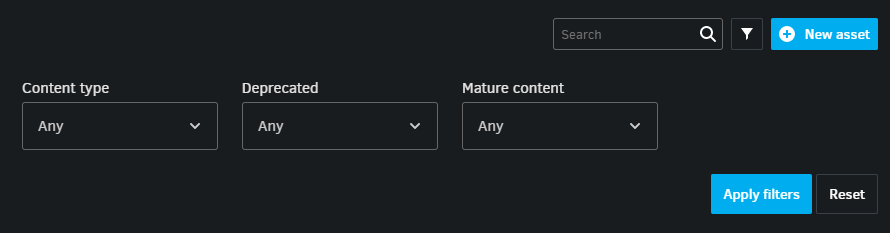 Click 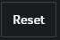 | |
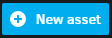 | Begins the asset submission process by opening a form for you to enter your submission details. See Contributing to the Asset Database for more information. |
Contributor Asset Options
Contributor asset submissions that are pending, in-progress or complete will be listed as follows:
Example of an asset submission
| No. | Column | Description | ||||||||||
|---|---|---|---|---|---|---|---|---|---|---|---|---|
| 1. | Price | Indicates the price of the submitted asset. Currently only free assets may be submitted. | ||||||||||
| 2. | Status |
| ||||||||||
| 3. | Contains the following options:
|